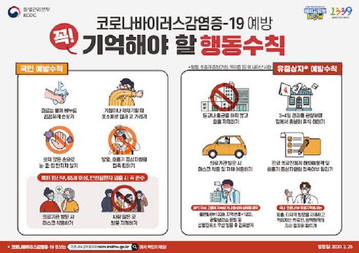

코로나 19 예방하기

You can change image to foreign languages by onclick. 마우스를 이미지에 다시 가져다 대면 한국어로 바뀝니다.
- 국민 예방수칙
- 유증상자 예방수칙
- 의료기관 예방수칙
1. 국민 예방수칙
- 흐르는 물에 비누로 손씻기
- 기침이나 재채기할 때 옷소매로 입과 코 가리기
- 씻지 않은 손으로 눈, 코, 입 만지지 말기
- 발열, 호흡기 증상자와의 접촉 피하기
- 의료기관 방문시 마스크 착용하기
- 사람 많은 곳 방문 자제하기
2. 유증상자 예방수칙
- 등교나 출근을 자제하고 외출 자제하기
- 3~4일 경과를 관찰하며 집에서 충분히 휴식 취하기
- 의료기관 방문시 마스크 착용 및 자차 이용하기
- 의료진에게 해외여행력 및 호흡기 증상자와의 접촉여부 알리기
3. 의료기관 예방수칙
- 진료시 마스크 등 보호구 착용
- 환자의 해외여행력, 의심환자 접촉력 등 반드시 확인
- 의심환자 발생시 선제적 격리후 코로나 19 검사 실시
- 발열 또는 호흡기 질환자 진료구역 및 진료절차 구분하여 운영